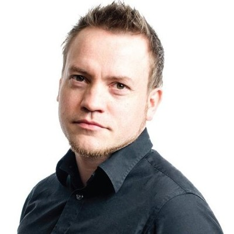
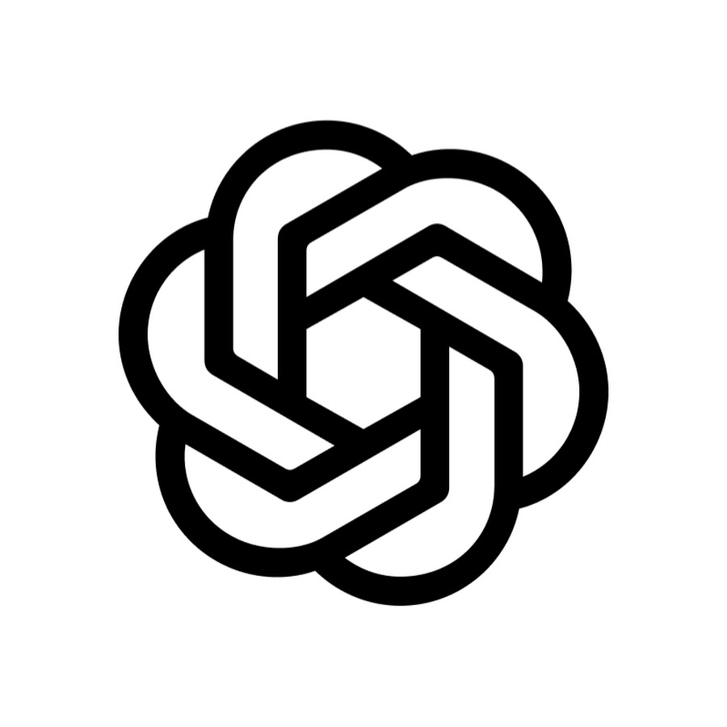

1994 – 2001
 Uddannelse
Uddannelse
- HTX svagstrøm, Horsens, 1994–1997
- Underviser, LOF aftenskole, 1995–1996. Grundlæggende brug af EDB. (Ja, det hed EDB dengang!)
- Datamatiker, Horsens Handelsskole, 1999–2001

protek.dk · Senior Lead Engineer, TravelMind Group
28 års erfaring med software, drift og ledelse.
Mærket · siden 1998
PROTEK
Protek er en sammentrækning af PROgress for TEKnos, som var mit første store projekt tilbage i 1998.
CV · 1994 til i dag
Ét spor, ni arbejdspladser og en egen virksomhed ved siden af.
1994 – 2001
1998 – 2000
Progress 4GL udvikler i mainframe-miljø
2001 – 2004
.NET udvikler
2004 – 2013
2013 – 2017
Udviklingskonsulent, C# og JavaScript
2017 – 2022
IT Manager
2022 – 2023
Senior Systems Architect
Cloud infrastructure og system design.
2023 – 2024
Head of IT
Daglig ledelse og onboarding, serverdrift, Navision, interne værktøjer i C#, automatisering og migrering af legacy-systemer til cloud og SaaS.
2024 – 2026
CTO
C#, ReactJS, GitLab CI/CD, O365-administration, domain admin, telefoni og cloud-strategi. Plus alt andet, der kan sættes strøm til.
2026 – i dag
Senior Lead Engineer
AI-drevet udvikling og Harness Engineering: agent-baserede workflows, rammer og guardrails, der gør AI-agenter pålidelige i produktion.
Mange flere projekter.

0
stjerner på GitHub
Open source · github.com/StephanThierry
Jeg har 23 egne offentlige repos. Her er de fire områder, jeg har lagt værktøj og guides ud inden for.
Repos med stjerner
Points of interest